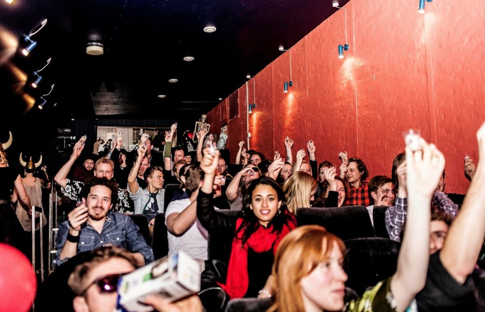

Om Huset
Hvad er Huset-KBH?
I Huset finder du en masse kulturoplevelser, krøllede ideer og kreative ildsjæle. Med intet mindre end 5 scener, en biograf, et teater, øvelokaler, madbod, arkadespil, en brætspilscafé – og mere end tyve foreninger og klubber – sker der rigtig meget!
Huset er faktisk et af Danmarks ældste kulturhuse! Det har ligget i Magstræde midt i København siden 1970, hvor det blev besat af en gruppe hippier og kunstnere.
I 2015 blev Huset en del af DIT:KBH som består af kulturhusene Huset-KBH, Verdenskulturcenteret, Onkel Dannys Plads, Kulturhuset Indre By og huser derudover også organisationerne CPH Volunteers og Projektpionererne. Sammenlagt står DIT:KBH for mere end 3000 årlige kulturarrangementer og tilbud, hvilket samler over 1.2 mio. besøgende københavnere hvert år.
Selvom Huset i dag har ændret navn og officielt nu hedder Huset-KBH så lever den gamle Magstræde-ånd videre gennem leg, kreativitet og frivillighed. Huset handler om at skabe sjove, skæve og alternative kulturoplevelser, der får hverdagen til at skille sig ud!
Vi er rammen – I er billedet
Huset er en mikro-by i byen, der drives af samskabelse. Her udvikler kulturskabere, entreprenante typer, ildsjæle og kreative mennesker alternative kulturoplevelser i samarbejder på kryds og tværs. Derfor opstår unikke oplevelser, som er formet af den interesse og passion, arrangørerne og publikum bringer med ind i Huset.
Hvert år arrangerer Huset, sammen med en bred kreds af foreninger, mere end 1500 små og store events og festivaler! De spænder fra livemusik og film til scenekunst, poesi og stand-up, og byder på både helt nye talenter og mere etablerede artister og bands.
På en typisk fredag aften kan man for eksempel både se kultfilm i Husets Biograf, få en intim og stærk koncertoplevelse i Musikcaféen eller blive blæst bagover af de skarpeste poeter i byen til Poetry Slam. Eller man kan tage et slag Matador eller noget lidt mere nørdet i Bastard Café med en kold specialøl og nyde sommeraftenen i Gårdhaven.
I Huset stiller vi professionelle faciliteter til rådighed i autentiske omgivelser.
Se, hvordan du kan skabe events i Huset.
Du kan også blive frivillig i en af Husets foreninger, events og festivaller der finder sted i Huset.
Læs mere her.
Få en rundvisning her!
A night at Huset
Bastard Café – brætspil, kaffe og hygge!
I Husets stueetage finder du den populære brætspilscafé Bastard Café. Her kan du spille et utal af brætspil og kortspil og samtidig nyde en god cremet kop kaffe, en lækker mikro-brygget øl eller få lidt til maven i form af chili fries eller deluxe toasts.
I kælderen i forhuset har Bastard Café udvidet med Bastard Café Downstairs, hvor du selvfølgelig også kan spille brætspil. Men her kan du også nyde en lidt mere bar-agtig stemning og prøve nogle af deres mange fantastiske gin!
Det er lige meget, om du aldrig har spillet et spil, kun er vant til 500, ludo og matador eller er super spilnørd! Der er plads til alle! Og Bastard Café har altid en frivillig brætspilsguru, der står klar til at hjælpe med reglerne.
Kom også med til en af de sjove temaaftener. Vi holder turneringer og sociale selskabslege, hvor du kan lære nye mennesker eller spil at kende. Tjek kalenderen her.
Bemærk at næsten al kommunikation i Bastard Café foregår på engelsk, da en stor del af personalet engelsktalende.
Se mere på Bastard Cafés hjemmeside
Bastard Café åbningstider
Mandag-torsdag: 12.00-00.00
Fredag-lørdag: 12.00-02.00
Søndag: 12.00-00.00
Se mere på Bastard Cafés hjemmeside
Bastard Café på Facebook
evoo – street kitchen – nordisk/italiensk street food

På første sal i Huset kan du stille sulten med italiensk street food lavet på lokale, økologiske råvarer. Du kan blandt andet sætte tænderne i en vegansk pizza, evoos take på polenta fries eller en focaccia sandwich med vegansk pålæg.
evoo – eller extra virgin olive oil – er flyttet ind i det gamle Spisehus’ køkken på første sal, og deler indgang med Bip Bip Bar Pop-Up. Gadekøkkenet trækker inspiration fra italienske og nordiske gourmettraditioner og tilbyder vegetariske alternativer til street food-klassikere som pizza og sandwich.
Take away-retterne er bestemt af sæsonen, og ingredienserne er udvalgt med fokus på klimavenlighed og økologi. evoo har bronzemærke i økologi med 30-60% af råvarerne fra økologiske kilder.
Bemærk at evoo er et street food-køkken uden spisepladser. Du er velkommen til at nyde maden i Husets gård eller ved bordene i Bastard Café eller Bip Bip Bar Pop-Up.
Læs mere om evoo – street kitchen, og se menuen på evoos hjemmeside.
evoo – street kitchens åbningstider
Tirsdag-søndag: 12-15 og 17-22
Bip Bip Bar Pop-Up – Slå din high score!

Sprøde øl, sjove drinks eller gamle spillemaskiner? Bip Bip Bar Pop-Up har noget for enhver smag og priser, der holder dig spillende hele aftenen.
Nørrebros populære Bip Bip Bar er åbnet som pop-up bar på første sal i Huset. Her kan du forsøge at slå high scoren i Pac-Man eller bare drikke en kold øl og kigge de andre spillere over skulderen. Baren har et bredt udvalg af gamle arkadespil, konsoller og pinball-maskiner. Første spil er på huset.
Følg med i åbningstider og events på Bip Bip Bar Pop-Ups Facebook.
Bip Bip Bar Pop-Up åbningstider
Fredag-lørdag: 16.00-02.00
Læs mere på Bip Bip Bars hjemmeside.
Husets Biograf
Kom og besøg os i Husets Biograf og få dyrket din indre filmnørd.
I Husets Biograf gør vi en dyd ud af, at skabe unikke og sjove filmoplevelser. I den gamle biograf viser vi alt fra kultklassikere til de ”små” ukendte film indenfor bl.a. genrerne science fiktion, drama, fantasy og horror.
I biografen bliver der også afholdt de populære interaktive filmvisninger som Sing-Along, hvor man kan få lov til, at danse og skråle med til Grease. Hvis du ikke er til fællessang og dans har du også mulighed for en aften i selskab med The Dudes og fællesskål i kolde White Russians til arrangementet Movie Drink-Along, hvor kultklassikeren The Big Labowski bliver vist.
Der er selvfølgelig også rig mulighed for, at nyde den helt klassiske biograftur med sodavand, popcorn og hvor du har mulighed for at se film som fx; fantasi filmen The NeverEnding Story, The Room, som har fået sin kult status for, at være verdens dårligste film, gyseren Carrie, klassikere som ADELHEID samt mange mange flere.
Find oversigten over filmvisninger på hjemmesiden under Events.
Her kan du også finde oplysninger om, hvordan du kan købe og reservere billetter.
Så kom og lad dig dykke ned i en verden af fantastiske historie fortalt på film.
Biografen drives af Foreningen Husets Biograf og er baseret udelukkende på frivillig arbejdskraft, så hvis du brænder for at formidle den gode historie gennem film og kan se dig selv som frivillig i Husets Biograf, så er du meget velkommen til at kontakte Jack Stevenson jack.stevenson@mail.dk
Musikcaféen – Københavns alternative musikscene

På tredje sal i Huset finder du Musikcaféen, som er Husets største og ældste scene. Scenen præsenterer up-and-coming kunstnere inden for blandt andet rock, pop og alternativ musik. Scenen har i mere end 40 år været stedet, hvor du møder de nyeste kunstnere først.
Scenen har lagt rammer til legendariske koncerter med DAD, Red Hot Chili Peppers, The William Blakes, Oh Land, Rumour Said Fire, Dagny og Dizzy Mizz Lizzy. Sidstnævnte tog herfra med vindertitlen i DM i Rock i 1993.
Udover musik kan du hver tirsdag deltage i Open Mic Stand-Up for Red Barnet Ungdom – enten som gæst eller komiker. Se kommende stand-up-arrangementer på Facebook.
Det er også muligt at leje lokalerne til private arrangementer. Læs mere om muligheden for at leje lokaler i Huset.
Se kommende begivenheder.
Følg Musikcaféen på Facebook.
Historie
Husets historie – Fra Huset i Magstræde til Huset-KBH

Huset-KBH (det tidligere Huset i Magstræde eller i folkemunde bare Huset) har eksisteret som kulturel og kunstnerisk frirum siden 1970. I løbet af årerne har Huset oparbejdet en lang og spændende historie. Vi har endnu ikke styr på alle fakta og historier, der findes derude. Har du noget at tilføje, noget at rette eller lyst til at dele en historie, så find kontaktinfo nederst på siden.
Udgangspunktet
I 1968 blev idéen til Projekt Hus undfanget af Det Ny Samfund og de politiske grupper Krim, ABCinema, Unge Pædagoger, Individ og Samfund samt Club 27. Året efter blev planerne for kolonialfimaet, Sthyr og Kjærs gamle pakhus offentliggjort: Et fælles værested for alverdens sociale og kulturelle betingelser støttet af Københavns Kommune, Kulturborgmesteren og Folketingets Finansudvalg.
Den 1. april 1970 overdrages huset til ‘de unge’. Efter overdragelsen flytter hippier og flippere ind i bygningen, hvor op mod 700 unge bor på Husets betongulve (Red: Vidste du, at Huset faktisk er det første betonhus i Danmark?).
Mens musikken spiller
Musikken larmer op igennem den skrammede opgang, og fællesskabet, solidariteten og stofferne bliver dyrket. Narkotikamisbruget og debatterne kommer til at plage Huset så meget, at stedet allerede bliver lukket året efter. Kommunen beslutter herefter at åbne Københavns Ungdoms Center (KUC) i maj 1972. Ja, faktisk har Huset været lukket og genåbnet omkring tre gange i sin levetid, henholdsvis 1971-72, 1994-97 og igen 2004-05.
Huset blev i disse år også fødested til blandt andet Fristaden Christiania og Thy Lejren. Det siges også, at Blekingegadebanden skulle have afholdt op til flere møder i Huset.
Husets Organisation
Rammen om kulturen

Huset er rammen om kulturen. En platform for at prøve forskelige kulturelle idéer af. Det betyder, at vi samarbejder på kryds og tværs med andre foreninger og kulturaktører i København om at skabe unikke kulturoplevelser.
Bastard Café, Musikcaféen, Husets Biograf, TeaterHuset, Bip Bip Bar, evoo, Paradise Jazz, CopenOpen Poetry Slam, Huset Stand-up, Lystløgneraften og Samlingspunktet Indre By – er blot nogle af de faste kulturskabere. Derudover findes der filmklubber, debatarrangementer, litteraturaftener og festivaler som Cph Jazz Festival, Vildskud, Zulu Comedy Festival og Talk Town Festival.
Foreningerne er meget forskellige! Nogle bor fast i Huset. Andre fungerer som klubber, pop-up-arrangementer og festivaler, der afholder tilbagevendende events på ugentlig, månedlig eller årlig basis.
Husets administration Huset bestyres til dagligt af en administration, som befinder sig i forhuset på stueplan ud mod Rådhusstræde.
Formålet med Husets administration er at skabe de bedste rammer for kulturen ved at sørge for drift, afvikling, teknik, rådgivning, netværk og rådgivning om blandt andet promotion.
Administrationen er ansvarlig for Husets overordnede profil, strategi, partnerskaber, organisation, ansættelser og budget og er officielt en del af Københavns Kommunes Kultur- & Fritidsforvaltning. Administrationen arbejder desuden tæt sammen med flere kulturhuse i København blandt andet med kulturhusudvikling og et særligt fokus på frivillighed, samskabelse og kulturelt iværksætteri.
Arrangører og foreninger i Huset-KBH Bastard Café Bastard Café er en hyggelig brætspilscafé. Der er nye spil, gamle spil, terningespil, kortspil, strategiske spil og en del spil med får. De har én ting til fælles: De er helt analoge! Bastard Café er for ALLE. Det er ligemeget, om du er en vildt passioneret spilnørd eller er nybegynder. Caféens frivillige spilguruer går rundt og forklarer reglerne, så du kan komme godt i gang!
Læs mere om Bastard Café
Musikcaféen
Musikcaféen er Københavns intime og alternative vækstlagsscene på tredje sal, hvor man kan opleve de næste store danske og internationale artister. Det intime lokale med plads til 150 publikummer garanterer en stærk koncertoplevelse helt tæt på musikken. Det legendariske spillested har ligget i Huset i mere end 40 år og igennem tiden præsenteret navne som D.A.D og Red Hot Chili Peppers.
Følg med i Musikcaféens program.
Husets Biograf
Husets Biograf er et helt unikt sted, godt skjult i hjertet af København. Den gamle undergrundsbiograf viser alternative film og har specialiseret sig i kreative filmfremvisninger. Biografens hjertebarn er The Rocky Horror Picture Show – en interaktiv biografoplevelse ud over det sædvanlige, hvor man som publikum er med til at komme med tilråb, klæde sig ud og meget mere til film-visningen. Men Husets Biograf byder også på masser af kitsch smalfilm, musical sing-along, glemte klassikere, gemte skatte og oversete mesterværker. Husets Biograf er det eneste sted i København, der stadig viser 35 mm film.
Se Husets Biografs kommende arrangementer her
TeaterHuset
TeaterHuset er en teaterforening, der arbejder for at understøtte og udvikle det voksende undergrundsteater i København. Foreningen råder over øvelokaler, know-how, netværk og professionelle scenefaciliteter på Xenon på øverste sal i Huset.
Læs mere om TeaterHuset her
Bip Bip Bar Pop-Up
Bip Bip Bar er en hyggelig og sjov café fyldt med gamle arkadespilmaskiner og konsoller. Få genopfrisket dine pin ball skills, hjælp Pac Man ind i midten af labyrinten og få en kold øl!
Læs mere om Bip Bip Bar her
evoo – street kitchen
På evoo kan du stille sulten med italiensk street food lavet på lokale, økologiske råvarer. Du kan blandt andet sætte tænderne i en vegansk pizza, evoos take på polenta fries eller en focaccia sandwich med vegansk pålæg.
Læs mere om evoo – street kitchen.
Paradise Jazz
Besøg Paradise Jazz i Stardust, og gør en hverdagsaften til noget særligt. Den legendariske jazzklub er ledet af Københavns ukronede jazz-dronning Tove Enevoldsen, som garanterer høj kvalitet og sikre performances – hver gang. Paradise Jazz præsenterer nogle af de største danske artister tirsdag, onsdag og torsdag hele året rundt. Klubben har især en stærk tradition under Cph Jazz Festival.
Læs mere om Paradise Jazz.
CopenOpen Poetry Slam
Copenopen er en af Husets månedlige arrangementer, der afholdes hver tredje fredag i måneden. Oplev nogle af de skarpeste poeter i landet, når de battler med hinanden om publikums gunst.
Læs mere om CopenOpen på Facebook.
Huset Stand-up
Hver tirsdag kan du komme med til en aften med stand-up i Huset! Oplev store navne og nye talenter. Forskning viser, at latter er godt for leveren. Forlæng din levetid med op til 5 år! Overskuddet går til Red Barnet Ungdom!
Læs mere om stand-up i Huset på Facebook.
Lystløgneraften
Kan du spotte en løgn? Denne aften med Lystløgnerne får du trænet dine Sherlock Holmes-evner. Hver lystløgner fortæller tre historier, men kun én af dem er sand. Kig ind, og find ud af, om du er til at løbe om hjørner med! Det er den første fredag i måneden.
Læs mere om Lystløgner aften på Facebook.
Samlingspunktet Indre By
Samlingspunktet er for ældre medborgere, der har interesse i at få nye oplevelser, sociale fællesskaber og livskvalitet. Samlingspunkt Indre By tilbyder blandt andet vejledning til brug af smartphones, netbank og borger.dk. Foreningen mødes ugentligt omkring fællesspisning, film, hygge, foredrag og kulturelle ture ud af huset. Det er medlemmerne selv, der er med til at sætte dagsordenen.
Læs mere om Samlingspunkt Indre By.
Klubber, debatarrangementer, litteraturaftener I Huset er der også en håndfuld mindre klubber og foreninger, der holder selvstændige events mere sporadisk. Vi har blandt andet kortfilmklubben Klub Kurz, litteraturaftener med Underskoven, radiobiograf med Terrapolis, musikklubber som Punks Undead og Klub Tråd og mange andre. Husets biograf holder også temaaftener, som Bad Movie Club, Beer and Blasphemy og udenlandske film.
Cph Jazz Festival
Under Cph Jazz Festival i begyndelsen af juli omdannes Huset til en levende jazz-by. Huset har en lang og stolt jazztradition, og hvert år præsenterer Paradise Jazz og Musikcaféen et vidt favnende program. Gårdhaven fyldes af god stemning til de gratis vækstlagskoncerter, og indenfor kan man komme helt tæt på nogle af landets største jazzartister.
Læs mere om Cph Jazz Festival.
Vildskud
Vildskud er en festival for uafhængigt teater og en fejring af vækstlaget, som afholdes hvert år i august. Vildskud har boet i Huset i over 15 år, og nu er festivalen begyndt at slå skud på andre scener i København, blandt andet Nørrebro Teater og Det Kgl. Teater.
Læs mere om Vildskud.
Talk Town Festival Talk Town er en festival for køn, ligestilling og feminisme. Den er et frirum med plads til dialog, nysgerrighed, læring og leg og byder på workshops, kunst, koncerter, talks og debatter. Festivalen finder sted i maj.
Læs mere om Talk Town.
Andre arrangører tilknyttet Huset-KBH
Alive Festival Bifrost Christianshavns Lokaludvalg Copenhagen Music Gnist King Size Big Band Musik i Lejet PhotoLab Prime Collective Street Poets Night Wonderwhy Music Company